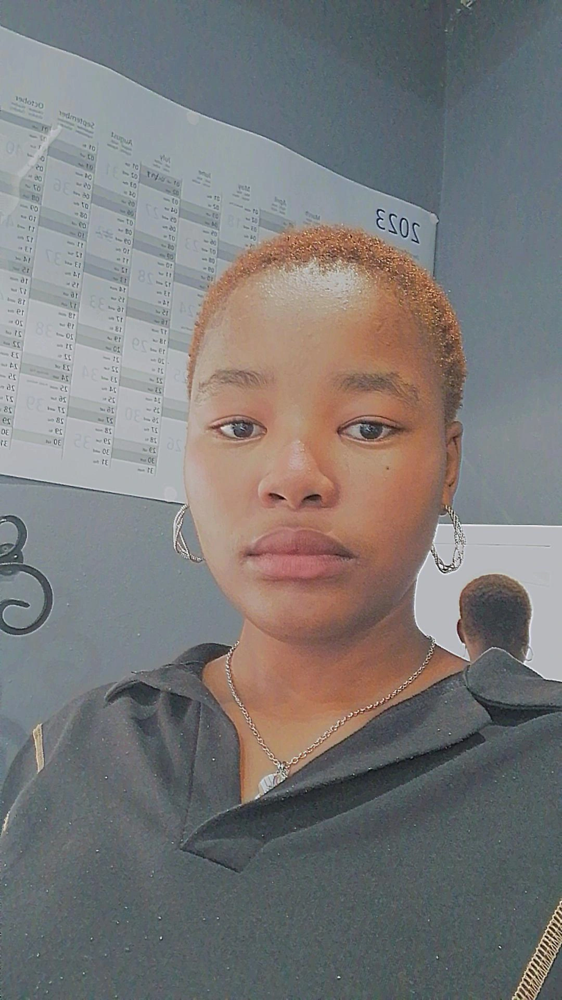

👋Hello! Welcome to my portfolio
I am a self-taught web developer with the love of creating beautiful, interactive websites and the passion of learning more.
Learn MoreAbout Me

Versatile and hard working high school graduate. Highly capable
academic
student and individual, having achieved a Grade 12 Academic
Certificates of Acknowledgement in 2022 on the merit award evening
for the
following subjects :Afrikaans EAT; 78,04%, Computer
Applications Technology; 78,5% and English HL; 82,71%. Managed to
volunteer and donate
my blood twice at the schools’ blood drive
hosted by the South African National Blood Services. Efficient in MS
Office and fluent in computer literacy.
My Skills
-
MS Office
I am able to use Microsoft Word, Excel and Database with no issues.
-
HTML
I can use HTML to create interactive websites that look pleasing to the eye.
-
CSS
Using CSS to decorate websites according to what you prefer.
My Projects
1st Project
Had to create a website to source the best writing jobs for future authors.
View Project2nd Project
This was part of a month long internship I took at Oasis Infobyte. I had to create a interactive company landing page using HTML, CSS and Javascript.
View Project